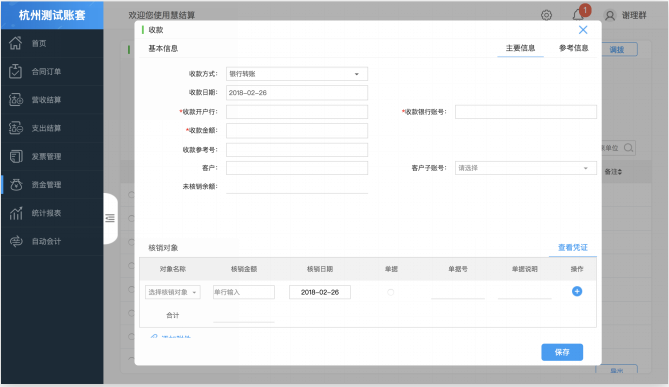
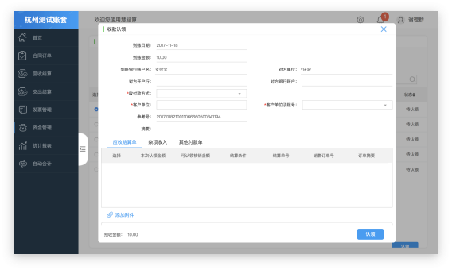
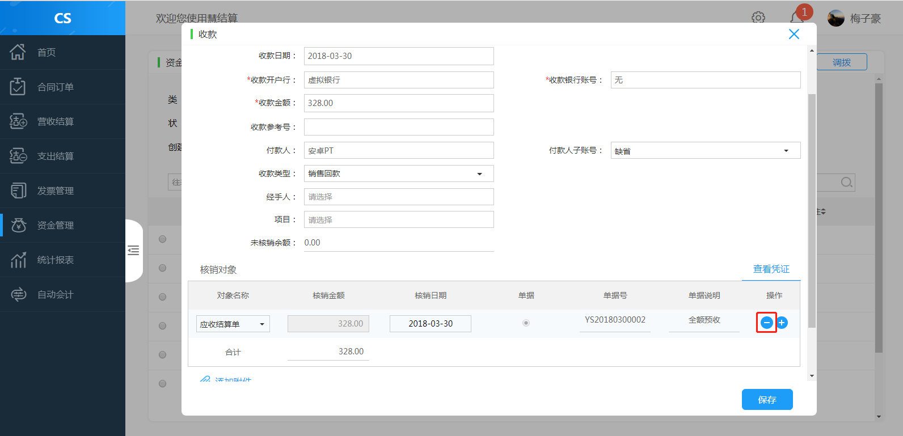

收款单
未现款结算的款项，客户后续付款时，均应通过收款单记录。它是进行销售收款结算和核销应收款的依据，是统计回款及核销款项数据的依据。系统通过手工创建收款单和收款认领创建收款单。
收款单创建
手工创建
1 、通过“资金管理-收款”或者企业日记账界面的“收款”按钮手工创建收款单。
2 、输入相关信息点击保存完成创建。

收款认领自动创建
收款认领完成后，在企业日记账中生成收款记录，避免手工创建收款单。

取消核销
1、收款认领中，若选择核销对象有误，系统提供取消核销操作控制，减少核销误操作。
2、在“企业日记账”界面选择要取消核销的收款单，选择核销对象旁的”-”进行取消，提示是否取消核销，点击确定完成取消核销。
- 收款认领后，如果发现核销对象错误，可以通过取消操作删除核销对象行记录，应收结算单释放，状态改回未收款，同时生成相反的会计凭证。 其他付款单和杂项收入核销后，不能删除核销对象行记录。
